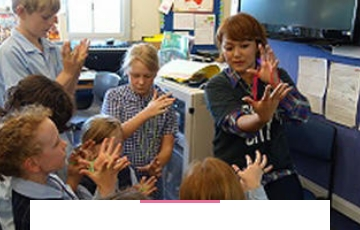
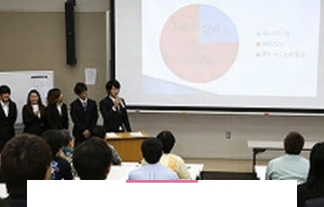
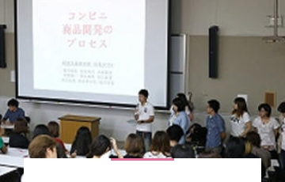
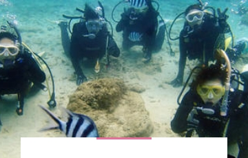

全学共通教養科目
国際文化専攻
沖縄県が持つ地理的・歴史的、文化的条件を活用した 環太平洋地域で貢献できる国際性豊かな能力を育成します。社会貢献できる人材に育てます。

語学教育専攻
あなたは英語力と日本語力に自信がありますか。 国際社会で活躍するには堪能な英語力や日本語力及び日本の文化の豊かな知識が必要です。私たちはその様な力を育てます。

経営専攻
現代社会の多様化・多次元化する諸問題に対応してマネジメントできる人材育成を目指します。

情報システムズ専攻
情報活用能力及び経営的センスと、国際的視野及び感覚を備え、さらに、システム思考に優れ、問題解決ができる人材が必要とされています。
診療情報管理専攻
医療情報管理のエキスパートとなるために、医学的領域、診療情報管理領域、IT領域、経営領域の4つの専門領域を学ぶことができます。
観光産業専攻
国際化、少子高齢化の進展、ライフスタイルの多様化等により観光が地球規模で展開し、観光産業の社会的ニーズが高まっています。

スポーツ健康学科
スポーツ健康学科は、「スポーツ領域」と「健康領域」の二つの領域を目的・対象・内容とし教育・研究を行い、そこに存在意義を持つ学科です。
看護学科
保健・医療・福祉を統合的に捉え、社会のニーズに対応し、地域社会及び国際社会に貢献しうる実践能力のある健康支援人材を育成します。